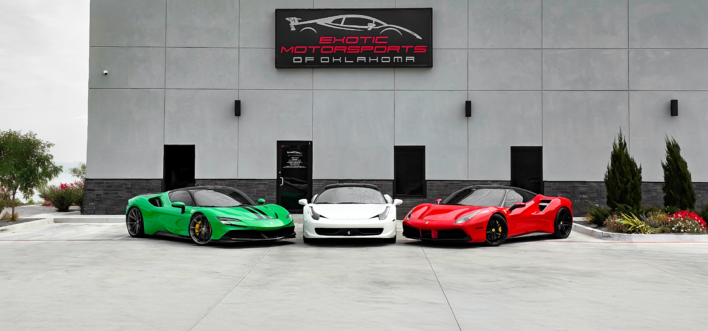
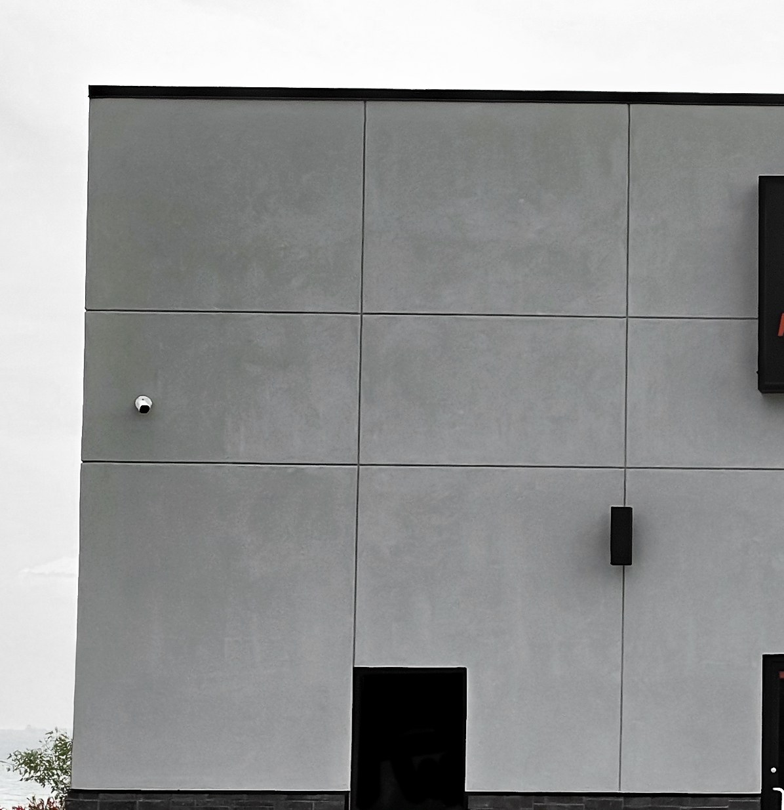
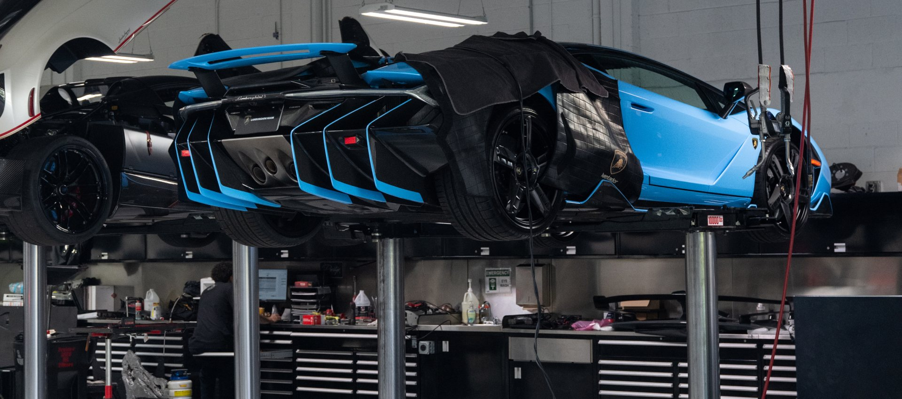

Edmond, Oklahoma · Service & Repair
European & Luxury Auto Service and Repair in Edmond, Oklahoma
When your vehicle needs service, you want more than a repair estimate.
- Digital inspections
- OEM procedures
- Photo documentation
- Quality control
More than a repair estimate.
You want an accurate diagnosis, a clear explanation, careful workmanship, and confidence that the job will be handled correctly the first time.
Exotic Motorsports of Oklahoma provides complete automotive maintenance, diagnostics, and mechanical repair for European and luxury vehicles throughout Edmond and the greater Oklahoma City metro area — for BMW, Mercedes-Benz, Audi, Porsche, Lexus, Land Rover, Range Rover and other premium vehicles, with specialized expertise for performance, exotic, classic and collector cars.
Whether you drive a BMW or Mercedes-Benz every day, maintain a Porsche or Audi performance vehicle, or need specialized care for an exotic or collector car, your vehicle receives the same disciplined attention to detail.
Diagnosis first. Then the repair that addresses the cause.
Modern European and luxury vehicles require more than general automotive knowledge. Their mechanical systems, electronics, computers, communication networks, suspension systems, and maintenance requirements often demand specialized diagnostic equipment, proper tooling, vehicle-specific information, and experienced technicians.
01
Check Engine Light & Vehicle Diagnostics
A warning light identifies that the vehicle has detected a problem. It does not necessarily identify the failed component or the repair that will correct it. Our diagnostic process is designed to find the underlying cause before parts are replaced.
Schedule diagnostic serviceDiagnostic services include
- Check engine light diagnosis
- Engine performance diagnosis
- Warning light diagnosis
- Driveability diagnosis
- Noise diagnosis
- Fluid leak diagnosis
- Intermittent fault tracing
- Factory-level computer scanning
- Advanced electrical diagnostics
- CAN Bus diagnostics
- Battery management system diagnosis
- Charging system diagnosis
- Module diagnosis and replacement
- Programming and coding
- ADAS calibration where applicable
We combine scan data, physical inspections, testing, photographs, and vehicle-specific information to develop a clear repair recommendation.
No guessing.No unexplained parts.No work without your approval.
Factory-Scheduled Maintenance Regular maintenance helps preserve your vehicle’s reliability, safety, performance, and long-term value.
We provide manufacturer-based maintenance for European, luxury, performance, and exotic vehicles, including:
- Engine oil and filter service
- Factory interval maintenance
- Engine air filter replacement
- Cabin air filter replacement
- Spark plug replacement
- Brake fluid service
- Coolant service
- Transmission service
- Differential service
- Transfer case service
- Accessory belt replacement
- Timing belt service
- Seasonal inspections
- Road trip inspections
Recommendations are based on the manufacturer’s schedule, the vehicle’s mileage, its current condition, and its available service history. Our team explains what is currently due, what should be monitored, and what can be planned for a future visit.
Schedule maintenanceEngine Diagnostics & Repair A warning light, an unusual noise, a leak, a rough running condition, a loss of power, or overheating.
Our technicians diagnose and repair a wide range of engine-related concerns, including:
- Engine performance concerns
- Check engine lights
- Oil leaks
- Coolant leaks
- Overheating
- Cooling system concerns
- Fuel system concerns
- Driveability problems
- Unusual engine noises
- Timing belt service
- Accessory belt service
Our goal is to identify why the problem is occurring and recommend the repair that addresses the cause. We do not replace parts based only on assumptions or fault codes.
Brake Service & Repair Your braking system directly affects safety, control, and driving confidence.
- Brake system inspections
- Brake system diagnosis
- Brake repair
- Brake fluid service
- Brake noise diagnosis
- Brake vibration diagnosis
- Hydraulic brake system repair
- Brake warning light diagnosis
Every recommendation is based on the actual condition of the vehicle.
Suspension & Steering Repair Ride quality, handling, stability, tire wear, and overall vehicle control.
- Suspension diagnosis and repair
- Steering diagnosis and repair
- Electronic suspension diagnosis
- Air suspension diagnosis and repair
- Hydraulic suspension service
- Suspension warning light diagnosis
- Noise and vibration diagnosis
These systems can be especially complex on European and luxury vehicles, where mechanical, electronic, hydraulic, and air-controlled components may work together.
Electrical & Electronic Diagnostics Interconnected modules, sensors, wiring systems, and communication networks.
Electrical issues may appear as warning lights, battery concerns, starting problems, intermittent failures, malfunctioning accessories, or communication faults between systems. Our capabilities include:
- Advanced electrical diagnostics
- Charging system diagnosis
- CAN Bus diagnostics
- Battery management systems
- Module diagnosis and replacement
- Programming and coding
- Warning light diagnosis
- Intermittent fault tracing
We use factory-level scan tools and structured testing procedures to isolate the source of the concern.
Heating & Air Conditioning Comfort, visibility, and year-round vehicle use.
- Air conditioning diagnosis and repair
- Heating system diagnosis and repair
- HVAC system diagnosis
- Electronic climate-control diagnosis
Transmission & Drivetrain Repair Shifting problems, delayed engagement, noises, vibration, leaks, or warning lights.
- Transmission diagnosis and repair
- Transmission service
- Differential diagnosis and repair
- Differential service
- Transfer case diagnosis and repair
- Transfer case service
- Clutch replacement
- Drivetrain noise diagnosis
Our team evaluates the concern and explains the available repair path before work begins.
Pre-Purchase Inspections Buying a used European, luxury, exotic, or collector vehicle is a significant decision.
An inspection can help identify concerns that may not be apparent during a brief test drive, including:
- Warning lights and stored faults
- Fluid leaks
- Deferred maintenance
- Brake and suspension concerns
- Cooling system concerns
- Electrical faults
- Current mechanical problems
- Upcoming service needs
We document the findings so you can better understand the vehicle before completing the purchase.
Schedule a pre-purchase inspectionBMW, Mercedes-Benz, Audi, and Porsche — and everything around them.
BMW
Incl. BMW MMaintenance, diagnostics, and repair for BMW sedans, coupes, convertibles, SUVs, and BMW M vehicles.
- Factory-scheduled maintenance
- Check engine light diagnosis
- Engine diagnostics and repair
- Cooling system repair
- Oil leak diagnosis and repair
- Brake service
- Suspension repair
- Electrical diagnostics
- Transmission and drivetrain service
Whether your BMW is a daily driver or an M performance vehicle, our technicians approach it with the same disciplined inspection and repair process.
Mercedes-Benz
Incl. Mercedes-AMGSedans, SUVs, coupes, convertibles, and Mercedes-AMG vehicles.
- Scheduled maintenance
- Engine diagnostics
- Warning light diagnosis
- Cooling system repair
- Brake service
- Electrical diagnostics
- Air suspension repair
- Transmission and drivetrain diagnosis
- HVAC diagnosis and repair
We combine advanced diagnostic equipment with direct communication and careful documentation.
Audi
Incl. Audi RSAudi sedans, SUVs, performance vehicles, and Audi RS models.
- Factory-scheduled maintenance
- Engine diagnostics
- Oil and coolant leak diagnosis
- Cooling system repair
- Brake service
- Suspension repair
- Electrical diagnostics
- Transmission and drivetrain service
- Warning light diagnosis
Porsche
Incl. 911 & BoxsterMaintenance, diagnostics, and repair for Porsche sports cars, sedans, and SUVs — including the 911, Boxster, Cayman, Panamera, Macan and Cayenne.
- Factory maintenance
- Engine diagnostics
- Cooling system repair
- Brake service
- Suspension repair
- Electrical diagnosis
- Transmission and drivetrain repair
- Pre-purchase inspections
Premium daily drivers are our core market
You do not have to own a supercar to expect exceptional automotive service. Most of our customers rely on premium European and luxury vehicles for daily transportation. In addition to BMW, Mercedes-Benz, Audi, and Porsche, we service vehicles from manufacturers including:
- Lexus
- Land Rover
- Range Rover
- Jaguar
- Volvo
- Acura
- Infiniti
- Cadillac
- Genesis
- Tesla
These vehicles still require proper diagnostic equipment, quality components, vehicle-specific knowledge, and technicians who understand their increasingly complex systems.
Not sure whether we service your vehicle? Contact our team with the year, make, model, and concern. We will let you know whether our facility is the right fit.
Ask about your vehicleExotic, performance, and collector expertise
Our experience with exotic and specialty vehicles reinforces the level of care we provide to every customer. We service vehicles from manufacturers including:
- Ferrari
- Lamborghini
- McLaren
- Aston Martin
- Bentley
- Rolls-Royce
- Maserati
- Lotus
We love to work with:
- Audi RS models
- BMW M vehicles
- Mercedes-AMG
- Corvette
- Viper
- High-performance domestic
- Classic European
- Collector cars
- Restomod vehicles
These vehicles demand precise handling, specialized diagnostics, careful inspection, and respect for their condition and value. That same standard of care is applied whether we are diagnosing an exotic vehicle or maintaining the BMW, Mercedes-Benz, Audi, Porsche, Lexus, or Range Rover you drive every day.
The same standard, every car
An exotic, or the car you drive every day.
We do not sell repairs. We provide certainty.
Many franchise dealership service departments are built around volume. Exotic Motorsports of Oklahoma is built around craftsmanship, communication, accountability, and long-term customer relationships.
Our responsibility is not to pressure you into approving every recommendation. Our responsibility is to inspect your vehicle carefully, identify legitimate concerns, explain what we found, and provide the information you need to make an informed decision.
Some repairs require immediate attention. Other items can be monitored or planned for a future visit. Our digital inspection and communication process helps you understand the difference.
Every recommendation is supported by inspection findings, diagnostic results, photographs, or documented testing whenever possible. That is how trust is built.
We provide the technical capability expected from a premium automotive facility with the personal attention of an independent, enthusiast-led operation. You are not simply another repair order — your vehicle, your concerns, and your ownership experience matter to us.
Our customers choose us for
- Personalized service
- Direct communication
- Digital vehicle inspections
- Photographic documentation
- Clear estimates before work begins
- Factory-level diagnostic equipment
- European and luxury vehicle knowledge
- Performance and exotic vehicle experience
- No unnecessary upselling
- Careful quality control
- White-glove vehicle handling
- A clean, professional facility
- Relationships instead of transactions
You should never have to wonder what is happening with your vehicle.
Every vehicle follows a structured workflow designed to keep you informed from arrival through delivery.
01 Arrival
Step 1
Vehicle Check-In
We document the vehicle’s condition and discuss the reason for your visit, the symptoms you have experienced, and any specific concerns you want us to investigate.
Step 2
Customer Consultation
Our team reviews the vehicle’s available service history and gathers the information needed to determine the appropriate inspection or diagnostic path.
Step 3
Digital Vehicle Inspection
The vehicle receives a structured inspection, with findings categorized by condition and urgency.
02 Diagnosis
Step 4
Photographs and Documentation
Relevant concerns are documented with photographs, inspection notes, diagnostic findings, or test results whenever possible.
Step 5
Factory-Level Diagnostics
Our technicians perform the testing necessary to identify the source of the concern rather than relying on assumptions.
Step 6
Estimate Review
We explain what we found, what we recommend, and which items require attention now or can be planned for later.
03 Approval & work
Step 7
Customer Approval
No additional repair work is performed without authorization.
Step 8
Service and Repair
Approved work is completed using proper procedures, quality components, and careful workmanship.
Step 9
Quality Control Inspection
Completed work is reviewed before the vehicle is released.
04 Delivery
Step 10
Road Test
When appropriate, the vehicle is road-tested to confirm proper operation.
Step 11
Final Cleaning
Your vehicle receives a final cleaning before delivery.
Step 12
Customer Delivery and Education
We review the completed work, explain relevant findings, and discuss future maintenance needs.
How findings are reported to you
Supported by inspection findings, diagnostic results, photographs, or documented testing.
Recorded now, re-checked at your next visit.
Explained so you can budget and schedule it on your terms.
Each finding is categorized by condition and urgency, then sent to you with the photographs and test results behind it.
No additional work is performed without your approval.

Service built on precision, integrity, and performance.
Precision
Modern European, luxury, and performance vehicles leave little room for shortcuts. Our technicians follow disciplined diagnostic and repair procedures and use OEM methods whenever possible.
Integrity
We support our recommendations with documented findings and communicate before proceeding. We do not believe in hidden repairs, unexplained work, or replacing parts without a clear reason.
Performance
Every system must work together as intended. Our goal is to preserve your vehicle’s drivability, comfort, reliability, safety, and performance.
These principles guide every inspection, recommendation, and repair.
Every repair reflects our reputation.
Our technicians work on vehicles that require accuracy and attention to detail — and completed work goes through a final quality-control process before delivery.
Whether diagnosing an electrical concern on a Mercedes-Benz, repairing a BMW cooling system, servicing an Audi, addressing a Porsche suspension concern, or maintaining a Ferrari or McLaren, every vehicle is approached with the same disciplined standards.
We invest in
- Continuing technician education
- Factory-level scan tools
- Specialized diagnostic equipment
- Vehicle-specific service information
- Proper tooling
- Digital inspection technology
- Organized service management systems
- Modern customer communication tools

Convertible Top, Hydraulic & Specialty Systems Systems not commonly found in general repair facilities.
- Convertible top diagnosis
- Hydraulic system diagnosis and repair
- Electronic suspension diagnosis
- Air suspension repair
- Battery management systems
- Specialty module diagnosis
- Programming and coding
Contact our team with your specific concern so we can determine the appropriate inspection and diagnostic process.
Automotive Glass Services Coordinated for premium, luxury, exotic, and specialty vehicles.
- Windshield replacement
- Windshield chip repair
- Door glass replacement
- Quarter glass replacement
- Back glass replacement
- ADAS recalibration following replacement
Some specialty glass work may be completed through trusted partners. Exotic Motorsports of Oklahoma remains involved in scheduling, project management, installation oversight, and quality control so you have one primary point of contact.
One Point of Contact for Specialty Work When a project needs outside expertise, we are honest about what it requires.
Certain vehicles and repairs may require highly specialized equipment or outside services. We coordinate with trusted specialty partners when necessary while remaining your primary point of contact.
Our team manages communication, scheduling, installation oversight, and quality control so you are not left trying to coordinate several different vendors yourself. The goal is a properly managed repair and a clear experience from beginning to end.
Vehicle Pickup and Delivery Trusted transportation may be available for qualifying appointments.
Transportation can be especially helpful for:
- Non-running vehicles
- Exotic vehicles
- Collector cars
- Specialty vehicles
- Vehicles that should not be driven because of a mechanical concern
Contact our service team to discuss your location, vehicle, and transportation needs.
Ask about vehicle transportSchedule European or luxury auto service in Edmond, Oklahoma.
Complete maintenance, diagnostics, engine repair, brake service, suspension repair, electrical diagnosis, and mechanical service for European, luxury, performance, exotic, and collector vehicles.
Edmond, OK 73013
Our promise
Our goal is to return every vehicle cleaner, properly inspected, and better than when it arrived.
Our name is attached to every repair. That matters to us.